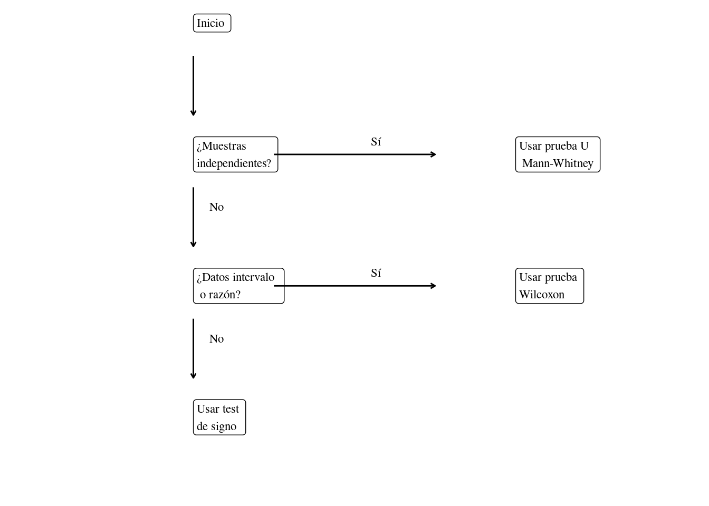

En el capítulo 7 vimos que para usar esas pruebas tenemos que cumplir con algunos requisitos sobre la distribución normal de las variables, nivel de medición y homogeneidad de las varianzas. Con alguna frecuencia, sin embargo, resulta que nuestros datos no cumplen con alguno de esos requisitos. Esto se puede dar por la naturaleza de la investigación, por ejemplo si estamos investigando un fenómeno que no se puede medir a escala de intervalo o razón; o tenemos relativamente pocos datos y luego de realizar los test de Fisher y Shapiro nos damos cuenta de que o la varianza es muy heterogénea o que las variables carecen de distribución normal.
Por suerte todavía hay esperanza. Existen algunas pruebas estadísticas, llamadas no paramétricas que nos pueden salvar en estos casos. En este capítulo desarrollaremos tres de ellos.
8.1 Prueba U de Mann-Whitney
La prueba U de Mann-Whitney resulta útil si tenemos dos muestras independientes y queremos si hay una diferencia en la magnitud de la variable que estamos estudiando, pero no podemos usar la prueba de t independiente o la prueba de z porque los datos no cumplen con alguno de los requisitos. Para realizar la prueba U de Mann-Whitney ponemos las observaciones de las dos muestras en orden ascendiente y asignamos un rango ordinal de manera que 1 corresponde a la observación de menor magnitud, 2 a la segunda etcétera. Luego nos fijamos en las diferencias entre las observaciones.
La prueba se basa en una comparación de cada observación de una muestra \(x_i\) con cada observación en la segunda muestra \(y_j\). Si las muestras tienen la misma mediana, entones cada observación tiene un 0,5 (50%) de chance de ser mayor o menor que la observación correspondiente de la otra muestra. Por tanto plantea las hipotesis:
\(H_0: P(x_i>y_j)={1\over2}\)
\(H_1: P(x_i>y_j)\neq{1\over2}\)
La prueba U de Mann-Whitney también se conoce con otros nombres: Mann–Whitney–Wilcoxon, Wilcoxon rank-sum test y Wilcoxon–Mann–Whitney. Por ello está disponible en R por medio de la función wilcox.test.
Ejemplo 8.1 (Prueba U de Mann-Whitney en R)
En este ejemplo vamos a suponer que tenemos datos diagnósticos de cuatro mujeres y cinco hombres. Todos fueron diagnosticados con diabetes y tenemos la edad a la cual se les descubrió la enfermedad. Queremos saber si hay diferencia en la edad entre hombres y mujeres. Los datos son:
#>
#> Wilcoxon rank sum exact test
#>
#> data: Hombres and Mujeres
#> W = 17, p-value = 0.1111
#> alternative hypothesis: true location shift is not equal to 0
Vemos que no podemos rechazar \(H_0\) en este caso.
8.2 Prueba de los rangos con signo de Wilcoxon
Vimos en la sección 8.1 que la prueba U de Mann-Whitney puede ser una alternativa a la prueba de t de Student para muestras intependiente (véase la sección 7.1) cuando los requisitos para un test paramétrico no se cumplen. Si los datos son pareados tenemos la prueba de los rangos con signo de Wilcoxon como alternativa a prueba t para muestras pareadas que vimos en la sección 7.4.
La lógica de la prueba de los rangos con signo de Wilcoxon es similar a la de la prueba de t pareada. Si no hay diferencia en el antes y despues, por ejemplo, las diferencias entre las observaciones deberían tender a cero.
Ejemplo 8.2 (Prueba de los rangos con signo de Wilcoxon en R)
En este ejemplo vamos a suponer que tenemos un grupo de doce pacientes con artritis y les damos dos medicaciones distintas para aliviar los síntomas. Pedimos a todos que nos indiquen cuantas horas de alivio observaron con ambas drogas.
#>
#> F test to compare two variances
#>
#> data: datos$Droga.A and datos$Droga.B
#> F = 0.41865, num df = 11, denom df = 11, p-value =
#> 0.1643
#> alternative hypothesis: true ratio of variances is not equal to 1
#> 95 percent confidence interval:
#> 0.1205199 1.4542635
#> sample estimates:
#> ratio of variances
#> 0.4186498
¡Bien! No tenemos problemas de varianza.
shapiro.test(datos$Droga.A)
#>
#> Shapiro-Wilk normality test
#>
#> data: datos$Droga.A
#> W = 0.80692, p-value = 0.01124
shapiro.test(datos$Droga.B)
#>
#> Shapiro-Wilk normality test
#>
#> data: datos$Droga.B
#> W = 0.7883, p-value = 0.006919
¡Ups!, las variables no tienen distribución normal. Entonces no podemos usar la prueba t pareada, tenemos que probar con Wilcoxon.
Usamos la función wilcox.test con el parametro extra de paired = TRUE.
#>
#> Wilcoxon signed rank test with continuity correction
#>
#> data: datos$Droga.A and datos$Droga.B
#> V = 8, p-value = 0.01669
#> alternative hypothesis: true location shift is not equal to 0
Vemos que el valor p se encuentra debajo de nuestro nivel de significanza (\(\alpha=0,05\)), con lo cual rechazamos \(H_0\) y concluimos que hay una diferencia estadísticamente significativa entre las dos mediamentos.
¿Y si usabamos la prueba t igual?
Si nos hubéramos olvidado de verificar la conformidad de los requisitos podríamos haber caído en la prueba t paramétrica, ¿qué hubiera pasado?
#>
#> Paired t-test
#>
#> data: datos$Droga.A and datos$Droga.B
#> t = -2.1465, df = 11, p-value = 0.05498
#> alternative hypothesis: true mean difference is not equal to 0
#> 95 percent confidence interval:
#> -4.28706458 0.05373125
#> sample estimates:
#> mean difference
#> -2.116667
Podemos observar que la prueba de t es sensible a la falta de normalidad en nuestras variables y no logra rechazar \(H_0\).
8.3 Prueba de signos
La prueba de Wilcoxon que vimos en la sección 8.2 requiere que los datos tengan una escala de medición (véase la sección 1.5) de intervalo. Pero a veces tenemos datos que solo se pueden medir a escala ordinal como por ejemplo la preferencia por alguna bebida de 1 a 5. En este caso no es razonable afirmar que la diferencia entre uno y dos es la misma que entre dos y tres, entonces no podemos tomar en cuenta la magnitud de esas diferencias.
La prueba de signos resuelve este problema convirtiendo la diferencia en una variable trinaria: puede ser cero, positiva o negativa. La lógica del test es similar a la de Wilcoxon, si no hay un patrón en las observaciones estas diferencias deberían tender a cero. Para realizar un test de signo debemos primero anotar el signo (positivo, negativo o cero) de todas los pares de observaciones que tenemos. Cuando la diferencia es cero se excluye el par del análisis y reducimos N acorde a eso. Luego sumamos los positivos por un lado y los negativos por otro y tomamos el menor le los dos. Este número, a menudo significado por una W, de puede compara con la tabla de valores críticos para el N que quedó, que se puede consultar en el apendice B para N entre 5 y 25.
Cuando N es superior a 25, es decir cuando tenemos venticinco o más observaciones que no sean cero, se puede transformar W en una variable normalizada. Usando la fórmula en la definición 8.1.
Definición 8.1 (Normalizar W del test de signos) \[
z={{N-2\times{W}-1}\over\sqrt{N}}
\]
8.4 Realizar prueba de sign para N>25
En este ejemplo vamos a suponer que hemos preguntado a 150 personas su opinión sobre el café de dos cafeterías: A y B, de la Ciudad de Buenos Aires. Les pedimos que indiquen en una escala de 1 a 5 cuánto les gusta cada producto. De ellos cincuenta dan el mismo ranking a ambos productos, con lo sus opiniones se eliminan del cálculo. De los restantes cien tenemos 39 que prefieren B y 61 que prefieren A. Tomamos el menor valor (39) y aplicamos la fórmula:
Recordamos que el valor mágico de la distribución normal –la regla empírica– es 1,96 para nuestro nivel de significanza \((p\leqslant0,05)\) y concluimos que existe una diferencia estadísticamente significativa.
8.5 ¿Cuál usar?
En la figura 8.1 podemos ver un diagrama de flujo para eligir un test no paramétrico.

Figura 8.1: Diagrama de flujo para selección de pruebas estadísticas no paramétricas.
8.6 Glosario
Prueba de los rangos con signo de Wilcoxon
Prueba estadística. Alternativa a la prueba t pareada, cuando los datos no cumplen con los requisitos para pruebas paramétricas. Función relevante en R: wilcox.test. Equivalente en inglés: «Wilcoxon ranked sign test».
Prueba de signos
Prueba estadística. Alternativa a la prueba t pareada, cuando los datos son de escala ordinal. Equivalente en inglés: «Sign-test».
Prueba U de Mann-Whitney
Prueba estadística. Alternativa a la prueba t o prueba z, cuando los datos no cumplen con los requisitos para pruebas paramétricas. Función relevante en R: wilcox.test. Equivalente en inglés: «Mann-Whitney U test».